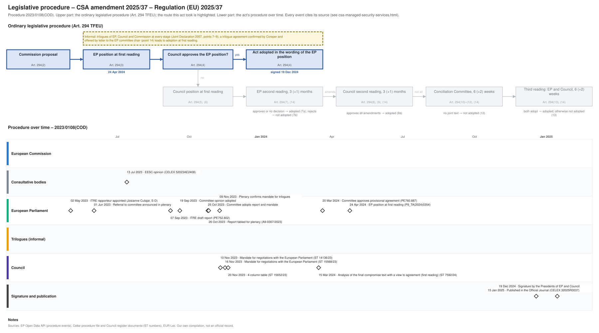

← Regulation timeline › CSA amendment 2025/37 › Legislative procedure · All procedures
Procedure 2023/0108(COD), completed. Drawing: SVG · PNG · PDF (A3) · draw.io · Page as Markdown: csa-managed-security-services.md
| Stage | Completed, published 15 Jan 2025 |
|---|---|
| Latest activity | 15 Jan 2025 · Signature and publication: Published in the Official Journal (CELEX 32025R0037) |

| Date | Actor | Event | Document | Source |
|---|---|---|---|---|
| 2023-05-02 | European Parliament | ITRE rapporteur appointed (Josianne Cutajar, S-D) | EP procedure file | EP Open Data API, procedure 2023-0108 (participation RAPPORTEUR) |
| 2023-06-01 | European Parliament | Referral to committee announced in plenary | EP procedure file | EP Open Data API, procedure 2023-0108 (REFERRAL) |
| 2023-07-13 | Consultative bodies | EESC opinion | CELEX 52023AE2408 | Cellar procedure file 2023/108 |
| 2023-09-07 | European Parliament | ITRE draft report | PE752.802 | EP Open Data API, procedure 2023-0108 (COMMITTEE_TABLING_REPORT) |
| 2023-09-19 | European Parliament | Committee opinion adopted | EP procedure file | EP Open Data API, procedure 2023-0108 (COMMITTEE_ADOPTING_OPINION) |
| 2023-10-25 | European Parliament | Committee adopts report and mandate | EP procedure file | EP Open Data API, procedure 2023-0108 (COMMITTEE_ADOPTING_REPORT) |
| 2023-10-26 | European Parliament | Report tabled for plenary | A9-0307/2023 | EP Open Data API, procedure 2023-0108 (TABLING_PLENARY) |
| 2023-11-09 | European Parliament | Plenary confirms mandate for trilogues | EP procedure file | EP Open Data API, procedure 2023-0108 (PLENARY_ENDORSE_COMMITTEE_INTERINSTITUTIONAL_NEGOTIATIONS) |
| 2023-11-10 | Council | Mandate for negotiations with the European Parliament | ST 14136/23 | Cellar procedure file 2023/108 (Council register) |
| 2023-11-16 | Council | Mandate for negotiations with the European Parliament | ST 15568/23 | Cellar procedure file 2023/108 (Council register) |
| 2023-11-20 | Council | 4-column table | ST 15652/23 | Cellar procedure file 2023/108 (Council register) |
| 2024-03-15 | Council | Analysis of the final compromise text with a view to agreement (first reading) | ST 7592/24 | Cellar procedure file 2023/108 (Council register) |
| 2024-03-20 | European Parliament | Committee approves provisional agreement | PE760.887 | EP Open Data API, procedure 2023-0108 (COMMITTEE_APPROVE_PROVISIONAL_AGREEMENT) |
| 2024-04-24 | European Parliament | EP position at first reading (Art. 294(3) TFEU) | P9_TA(2024)0354 | EP Open Data API, procedure 2023-0108 (PLENARY_AMEND_PROPOSAL) |
| 2024-12-19 | Signature and publication | Signature by the Presidents of EP and Council | EP procedure file | EP Open Data API, procedure 2023-0108 (SIGNATURE) |
| 2025-01-15 | Signature and publication | Published in the Official Journal | CELEX 32025R0037 · en.md de.md | EP Open Data API, procedure 2023-0108 (PUBLICATION_OFFICIAL_JOURNAL) |
Every document the Council register, the EU database of the Parliament of Austria or the EP lists for the procedure, with its state: public documents link to the official file; documents that are not public link to their entry in the Austrian database where there is one (metadata only). "Unofficially leaked": a copy is known to circulate outside the institutions; it is not published here.
| Date | Document | Kind | Subject | Status | Text |
|---|---|---|---|---|---|
| 2023-04-21 | ST 8511/23 | council-transmission | Proposal for a REGULATION OF THE EUROPEAN PARLIAMENT AND OF THE COUNCIL amending Regulation (EU) 2019/881 as regards managed security services | public status unknown | – |
| 2023-06-02 | ST 10063/23 | council-note | Optional consultation of the Committee of the Regions | public status unknown | – |
| 2023-07-13 | CELEX 52023AE2408 | opinion | Opinion of the European Economic and Social Committee on ‘Proposal for a Regulation of the European Parliament and of the Council amending Regulation (EU) … | public | – |
| 2023-07-20 | ST 12041/23 | council-transmission | Opinion of the European Economic and Social Committee | public status unknown | – |
| 2023-07-20 | ST 12079/23 | council-transmission | Opinion on the application of the Principles of Subsidiarity and Proportionality | public status unknown | – |
| 2023-08-02 | ST 12284/23 | council-transmission | Opinion on the application of the Principles of Subsidiarity and Proportionality | public status unknown | – |
| 2023-09-07 | PE752.802 | ep-draft-report | DRAFT REPORT on the proposal for a regulation of the European Parliament and of the Council amending Regulation (EU) 2019/881 as regards managed security … | public | – |
| 2023-10-26 | A9-0307/2023 | ep-report | REPORT on the proposal for a regulation of the European Parliament and of the Council amending Regulation (EU) 2019/881 as regards managed security services | public | – |
| 2023-11-10 | ST 14136/23 | council-position | Mandate for negotiations with the European Parliament | public | – |
| 2023-11-16 | ST 15568/23 | council-position | Mandate for negotiations with the European Parliament | public | – |
| 2023-11-20 | ST 15652/23 | trilogue | 4-column table | public | – |
| 2024-01-11 | ST 5322/24 | council-transmission | Opinion on the Proposal for a Regulation of the European Parliament and of the Council amending Regulation (EU) 2019/881 as regards managed security services | public status unknown | – |
| 2024-03-15 | ST 7592/24 | agreed-text | Analysis of the final compromise text with a view to agreement (first reading) | public | – |
| 2024-03-20 | PE760.887 | agreed-text | PROVISIONAL AGREEMENT RESULTING FROM INTERINSTITUTIONAL NEGOTIATIONS Proposal for a regulation of the European Parliament and of the Council amending … | public | – |
| 2024-03-20 | ST 8024/24 | council-note | Letter sent to the European Parliament | public status unknown | – |
| 2024-04-24 | P9_TA(2024)0354 | ep-position | Managed security services | public | – |
| 2024-06-18 | ST 10819/24 | council-note | Files under the ordinary legislative procedure expected to undergo the Corrigendum Procedure in the European Parliament (part II) | public status unknown | – |
| 2024-06-26 | ST 10819/24 COR 1 | council-note | Proposals under the ordinary legislative procedure expected to undergo the Corrigendum Procedure in the European Parliament (part II) | public status unknown | – |
| 2024-09-16 | PE 93/24 | council-note | REGULATION OF THE EUROPEAN PARLIAMENT AND OF THE COUNCIL amending Regulation (EU) 2019/881 as regards managed security services | public status unknown | – |
| 2024-11-22 | ST 15878/24 | council-note | Draft REGULATION OF THE EUROPEAN PARLIAMENT AND OF THE COUNCIL amending Regulation (EU) 2019/881 as regards managed security services (first reading) - … | public status unknown | – |
| 2024-11-22 | ST 15878/24 ADD 1 | council-note | Draft REGULATION OF THE EUROPEAN PARLIAMENT AND OF THE COUNCIL amending Regulation (EU) 2019/881 as regards managed security services (first reading) - … | public status unknown | – |
| 2024-12-02 | ST 16503/24 | council-note | Voting result REGULATION OF THE EUROPEAN PARLIAMENT AND OF THE COUNCIL amending Regulation (EU) 2019/881 as regards managed security services Adoption of the … | public status unknown | – |
| 2024-12-19 | PE 93/24 REV 1 | council-note | REGULATION OF THE EUROPEAN PARLIAMENT AND OF THE COUNCIL AMENDING REGULATION (EU) 2019/881 AS REGARDS MANAGED SECURITY SERVICES | public status unknown | – |
Unofficial Markdown conversions for reading, searching and project folders; only the official document is authentic. "Read" opens the rendered text on GitHub, where a link to a provision (#art-13, #rec-12, #annex-i) jumps to it.
| Date | Stage | Document | Markdown | Read |
|---|---|---|---|---|
| 2025-01-15 | oj | CELEX 32025R0037 | en de | GitHub |
| 2025-01-24 | corrigendum | CELEX 32025R0037R(01) | en de | GitHub |